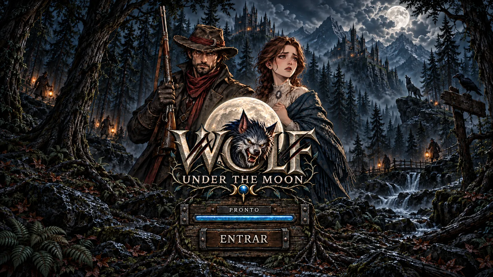
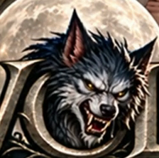
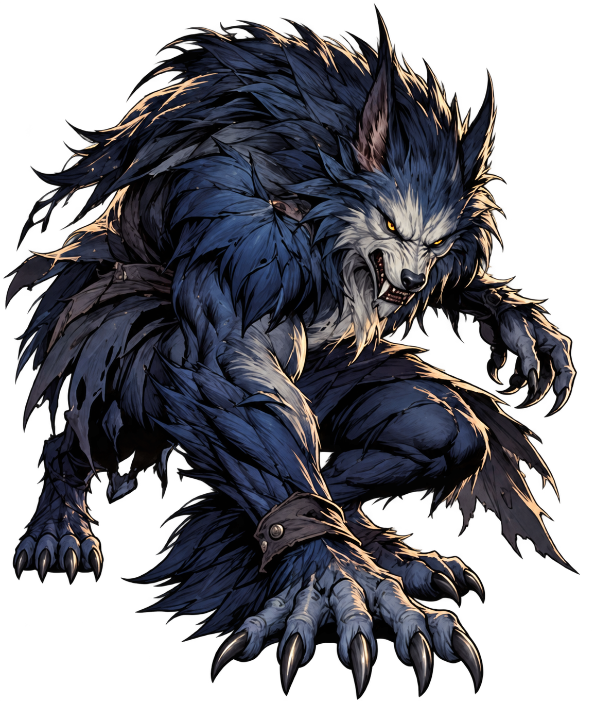
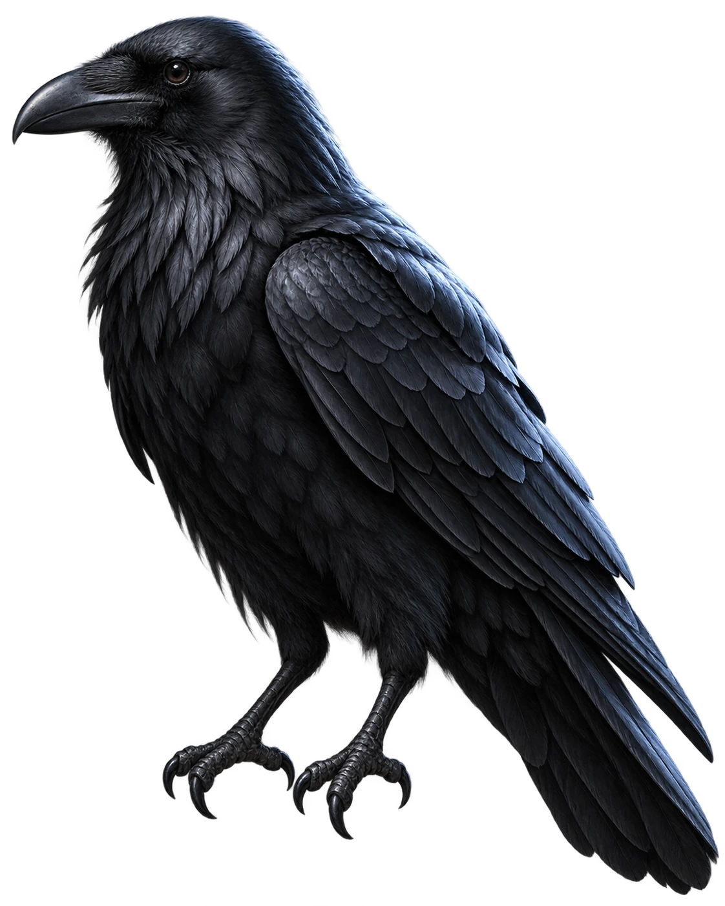
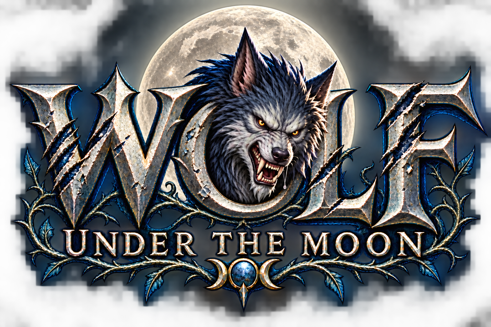

Preparando a floresta…



Efeitos: vento, movimento na mata e uivo. Música ambiente em loop. Suas preferências ficam salvas.
Gire para preencher as 16 posições. Conecte três ou mais símbolos iguais pelos lados, na horizontal ou vertical. Diagonais não contam.
Os símbolos vencedores saem, os de cima caem e novos entram. Cada nova combinação rende outro ganho na mesma rodada.
Nesta simulação, grupos em L e T também contam — hipótese em revisão. Cada símbolo vale 10 pontos fictícios, somados entre cascatas.
Pontos fictícios nesta versão. Sem dinheiro ou apostas.
Compartilhe a caçada.
Gire para preencher as 16 posições. Grupos de pelo menos três símbolos iguais conectados na horizontal ou vertical pontuam. Diagonais não contam.
Linhas, quadrados e retângulos são exemplos. Nesta simulação, formas em L e T também contam — hipótese ainda em revisão.
São 10 pontos fictícios por peça do grupo. Sem grupo, a rodada não pontua. Não há dinheiro, apostas ou conexão a uma conta.
Após um ganho, os símbolos vencedores saem. Os de cima caem e novos entram. Se houver outra combinação, você ganha novamente na mesma rodada. Os pontos de todas as cascatas são somados. Bônus ainda não foram definidos.